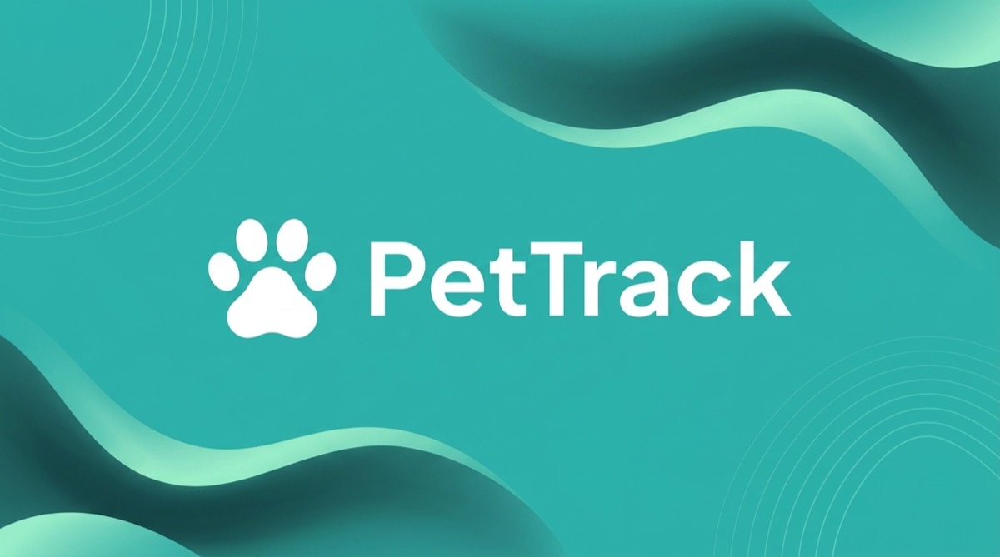
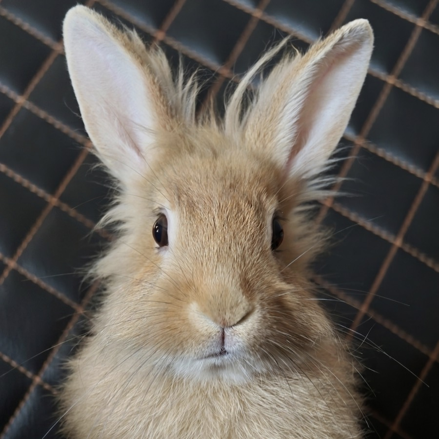
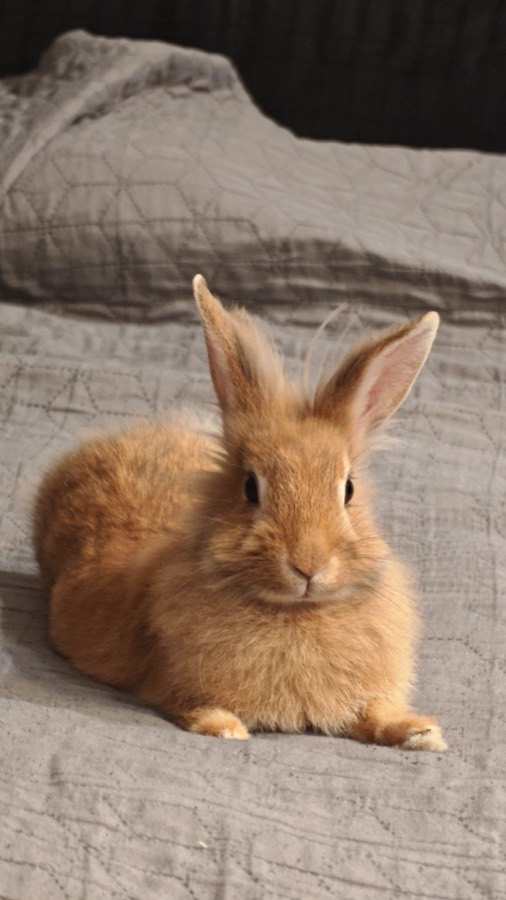
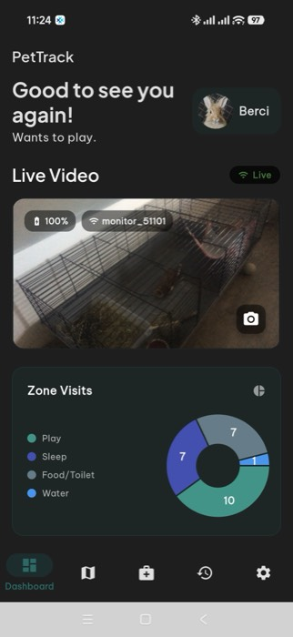
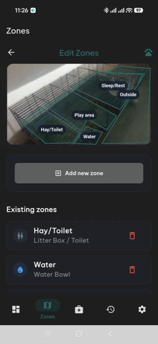
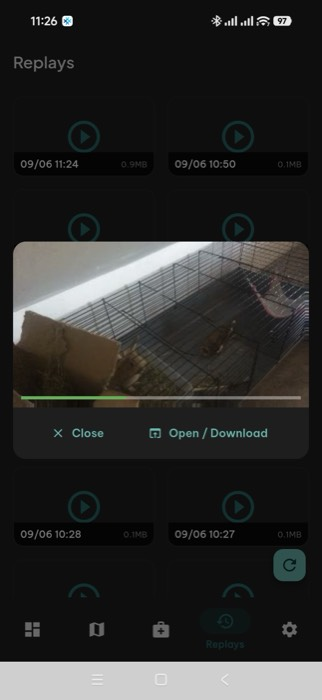
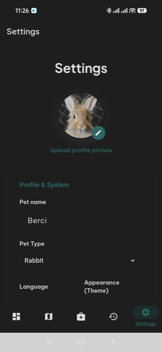

PetTrack turns a phone you already own into a pet camera with live video, motion replays and a daily recap — running on your own computer, not someone's cloud.

Because the one you were about to buy charges a subscription to see your own pet, and sends the video through a datacenter on the way.
Live stream, motion replays and zone alerts on day one. Then the parts that make it feel like a product, not a project.
Watch from the app or the web dashboard, take snapshots, or call your pet with a sound when they're out of frame.
At the end of the day, the moments that mattered stitched into one short clip — plus a timelapse of the whole day in seconds.
Draw the sofa, the food bowl, the no-go corner. Get a notification the moment your pet steps in — or out.
See them in the dark from the app, and hear about the bark or meow that happened while you were away.
A live snapshot and battery status right on your home screen, and complications on the watch — no unlock needed.
Camera, motion and battery entities appear automatically over MQTT, so PetTrack fits into the smart home you already have.


A dark, calm interface that works the same on Android, iOS, the web and WearOS.




No flashing, no soldering, no account. If you can paste one command, you can run PetTrack.
One command on any Linux, macOS or Windows machine — or a single
docker compose up. The logs print a 4-digit PIN.
Install the app, scan the QR code from the server logs or the web dashboard, and you're connected.
Open the monitor mode on the spare phone, prop it up, done. The first replays start appearing within minutes.
PetTrack has no cloud, no account and no analytics. The camera, the recordings and the database live on your machine, under your control. Licensed GPLv3 — free to use, free to change, free to share.